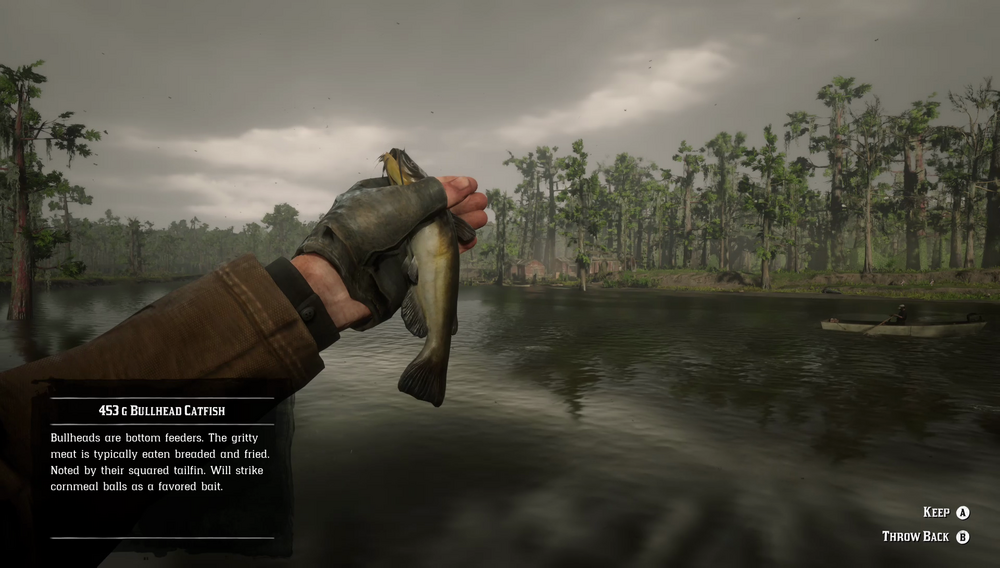

Bullhead Catfish is a small, bottom-feeding fish found in the swamp waters of Lemoyne, the Bullhead Catfish is strongly attracted to corn and may also be tempted by cheese and bread. They respond to rainy weather by becoming more active. A Legendary Bullhead Catfish is said to have been spotted in the vicinity of Sisika Penitentiary.
Swamps of Lemoyne, most notably in Bluewater Marsh near Lakay and Lagras.
